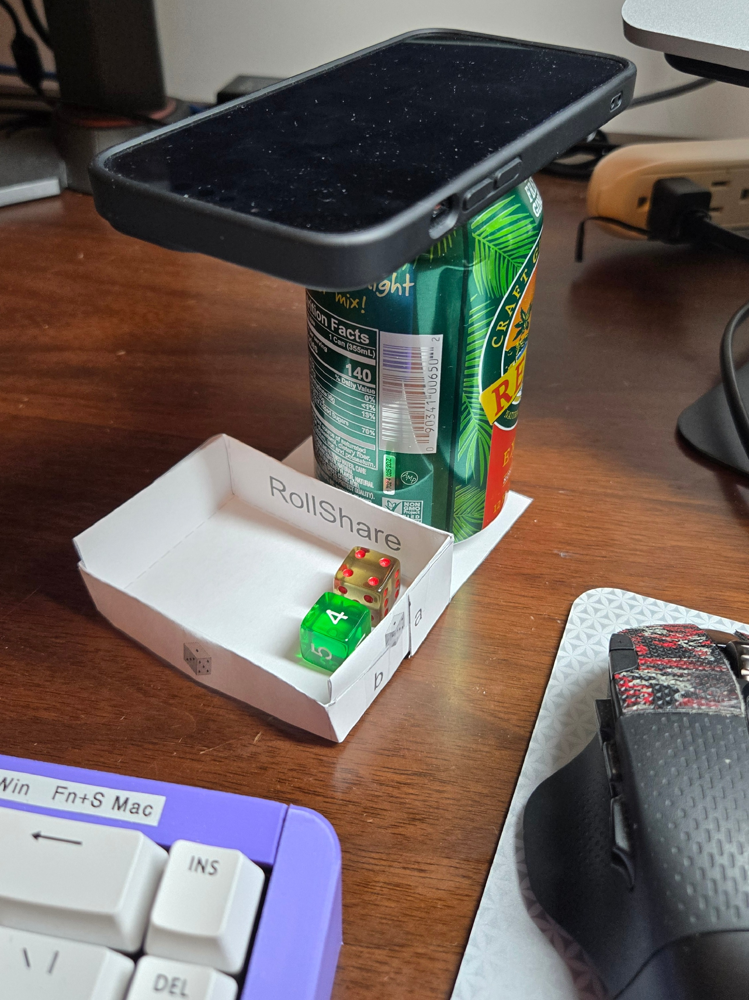

RollShare
Point phone down at the dice tray —

Rest your phone face-down on a prop (a soda can works great) so the camera looks straight down at your dice tray.
📷
Opening camera…
⏳
Ready
Default rear camera